Les retraits simulés restent distincts des montants du portefeuille.
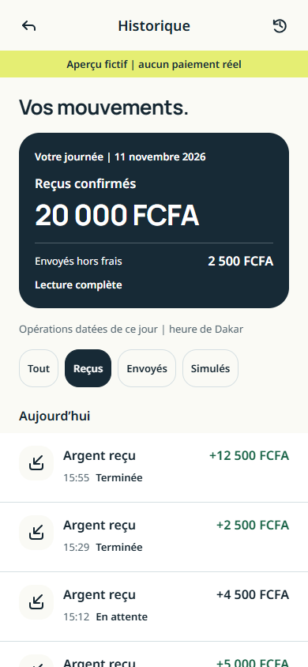
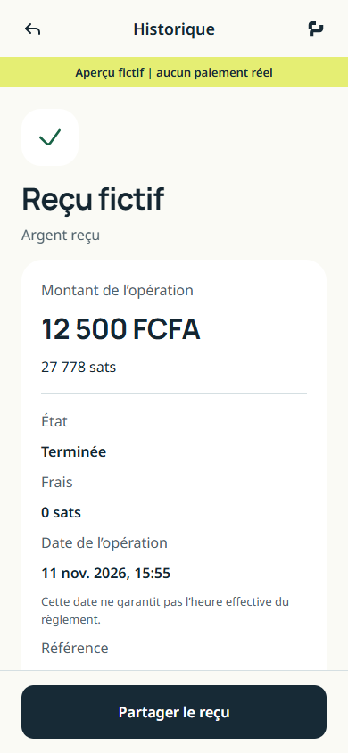
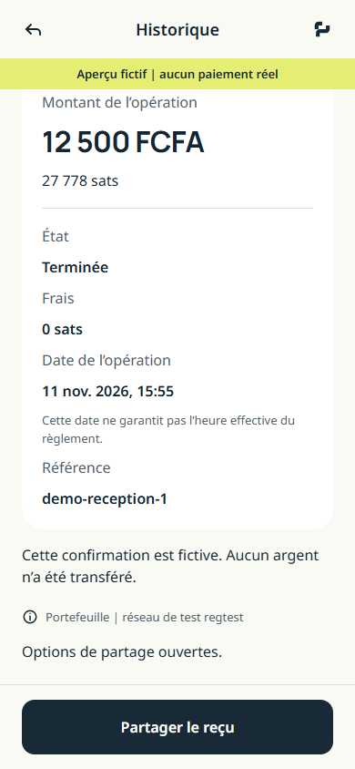
Options interceptées en mémoire ; aucun message envoyé.
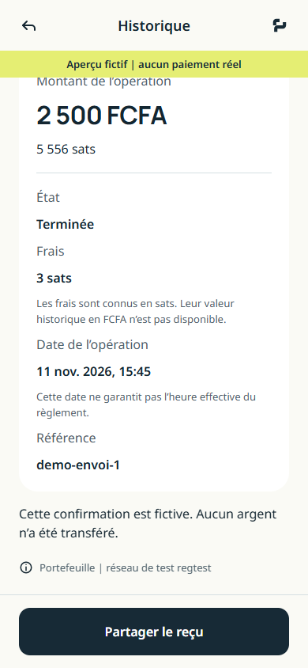
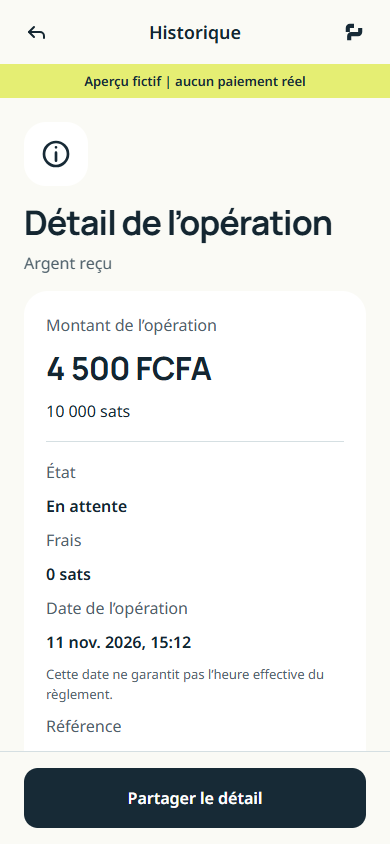
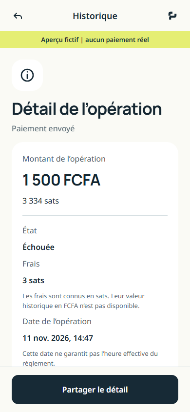
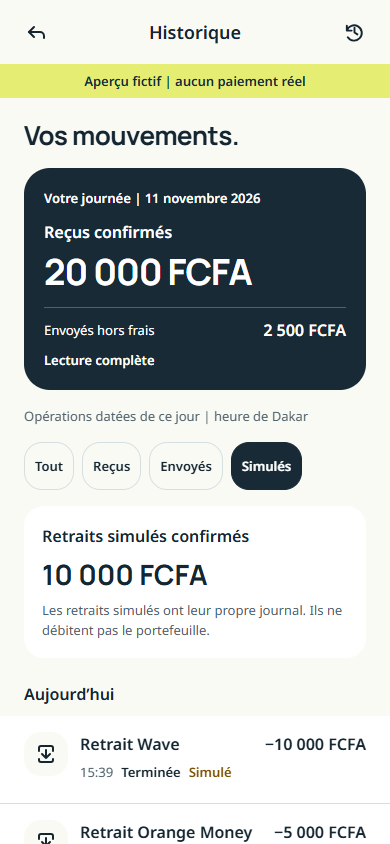
Les fonds de démonstration ne sont pas additionnés au wallet.
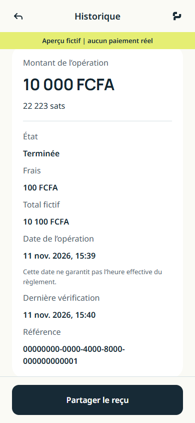
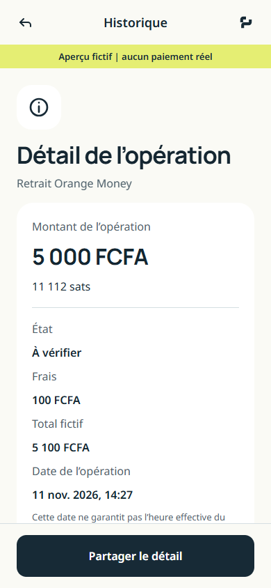
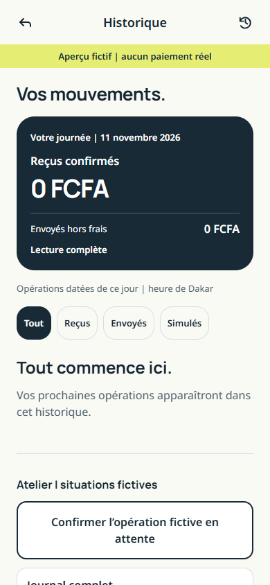
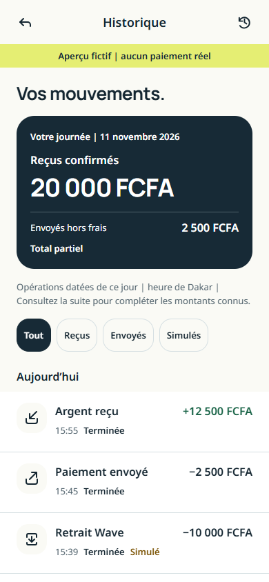

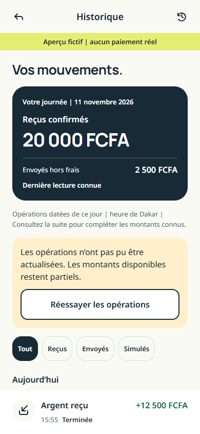
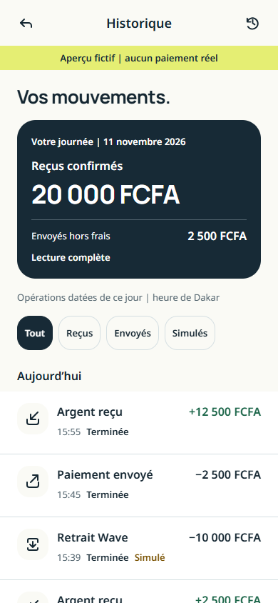
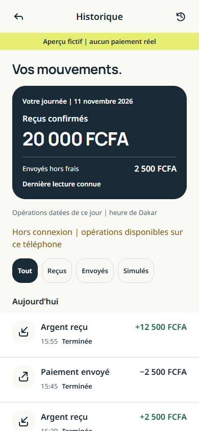
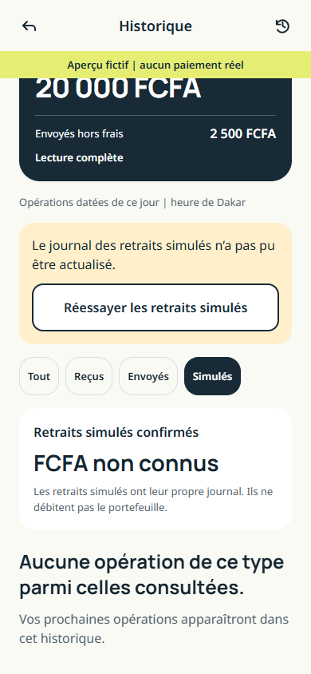
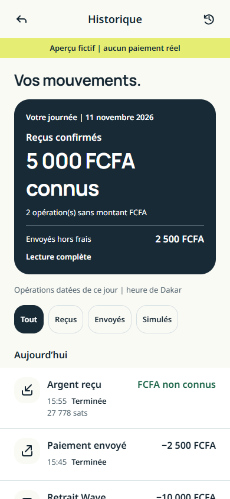
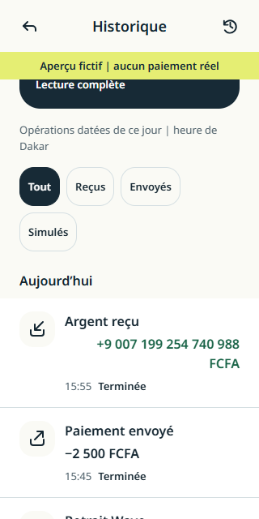
Les libellés accessibles et le partage gardent les nombres canoniques.
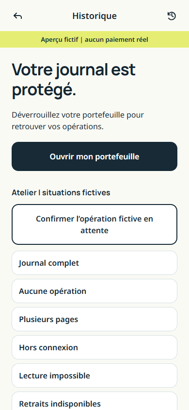
Aucune valeur précédente conservée dans le rendu.
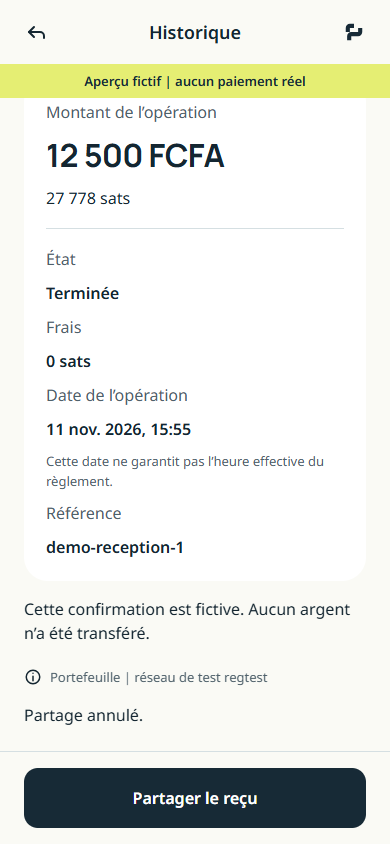
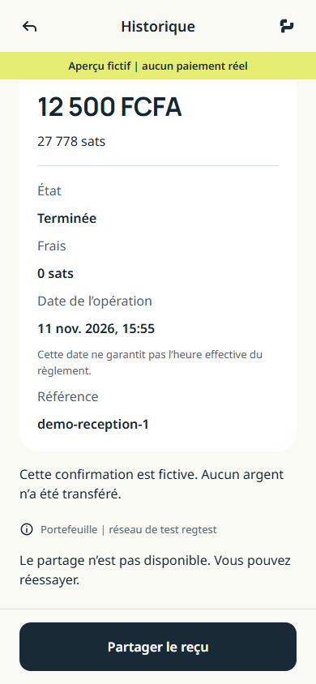
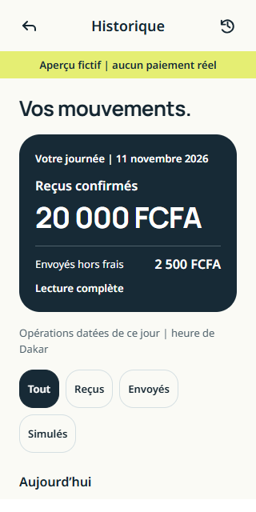
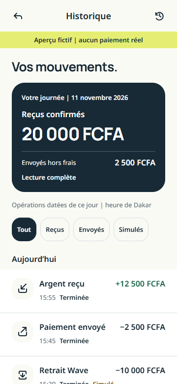
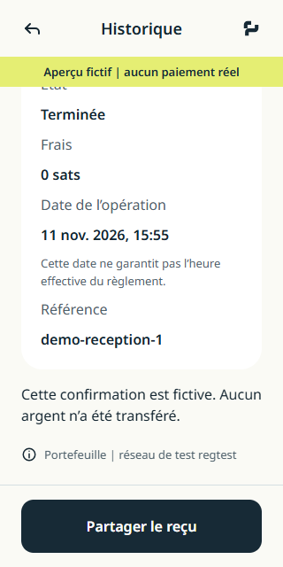